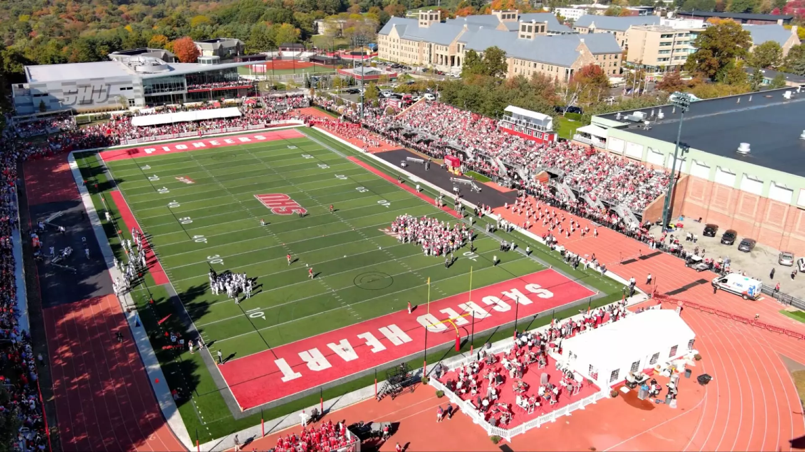

Campus Field is a 3,334-seat multi-purpose stadium in Fairfield, Connecticut. It is home to the Sacred Heart University Pioneers football, lacrosse, and track and field teams. The facility opened in 1993. The field and track located at Campus Field were modernized and renovated in the summer of 2008.
https://en.wikipedia.org/wiki/Campus_Field